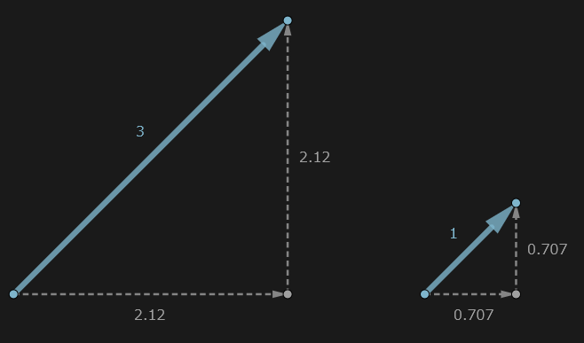

単位ベクトル
解説/アルゴリズム

ベクトルの大きさが 1 になるように、各成分を現在のベクトルの大きさで割る。
このようにベクトルの大きさを 1 にする作業を正規化と呼び、この大きさ 1 のベクトルを単位ベクトルと呼ぶ。
円で考えると半径が 1 になるので、 x や y のような各成分の値は必ず -1 ～ 1 の範囲に収まる。
const a: Vector = { x: 6, y: 6, z: 0 }; // 向き45度、大きさ8.4852...のベクトル
const b: Vector = { x: 0, y: 3, z: 0 }; // 向き90度、大きさ3のベクトル
unit(a); // 正規化することで、向き45度、大きさ1のベクトルになる。
unit(b); // 正規化することで、向き90度、大きさ1のベクトルになる。
ベクトルは大きさと向きを持つ量だが、正規化することで大きさが 1 になり、向きだけを持つベクトルと考えることができる。
x /= length;
y /= length;
x *= size;
y *= size;
1 ではなく特定の大きさに設定したい場合は、一度正規化した後、設定したい大きさを成分に掛け合わせる。
コード例
// 引数の大きさで正規化する
export function normalize(vec: Vector, len: number = 1): Vector {
const ratio = len / length(vec);
return { x: vec.x * ratio, y: vec.y * ratio, z: vec.z * ratio };
}
// エイリアス
export function unit(vec: Vector): Vector {
return normalize(vec);
}
import { length, normalize, unit, Vector } from "./vector";
const a: Vector = { x: 6, y: 6, z: 0 };
console.log(length(a)); // 8.48528137423857
const b: Vector = unit(a);
console.log(length(b)); // 1
const c: Vector = normalize(a, 2);
console.log(length(c)); // 2